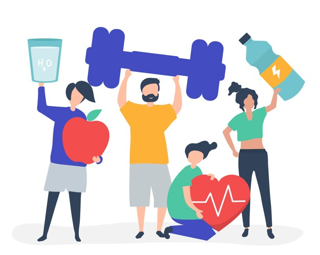
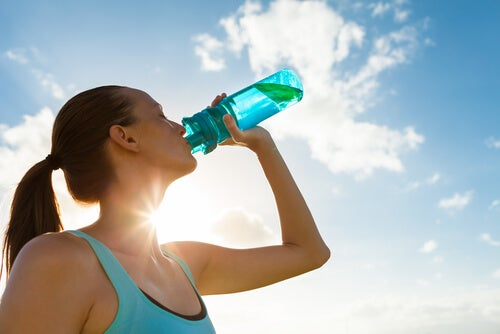
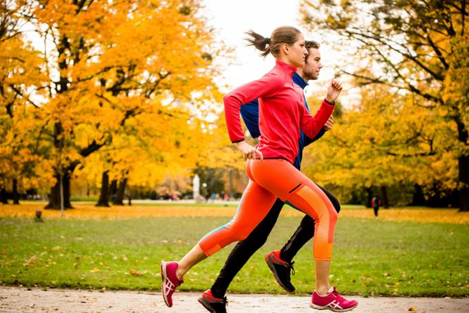
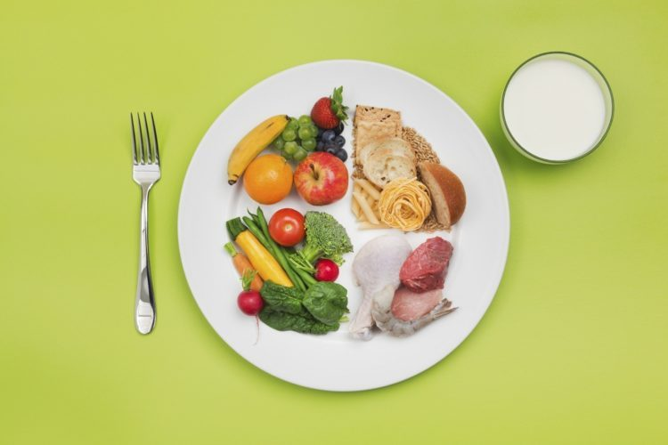
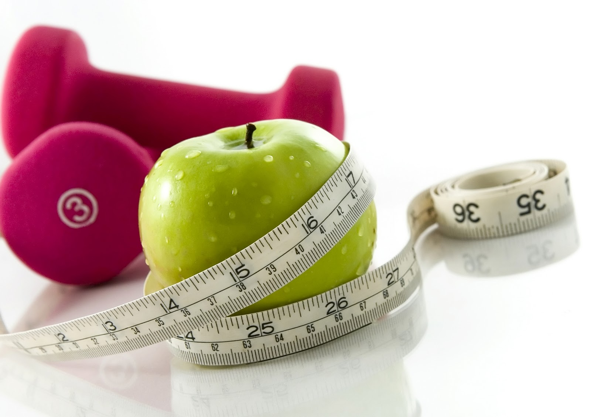

Este sitio web surge a partir de la preocupación por la vida de las personas y su forma de vivirla, nos preocupamos por los problemas de salud y los trastornos que las personas pueden tener debido a lo que comen, beben o hacen, ya que la forma en que vives tu vida te afecta de manera física, emocional y a tu entorno.

Misión
Crear un cambio en la vida de las personas, influyendo en su rutina diaria y en el cuidado de su alimentación, mediante el respeto hacia el medio ambiente.
Visión
Contribuir a la disminución de problemas alimenticios en las personas, alentando a la preservación del medio ambiente.
Una mayor conciencia de nuestro impacto en el medio ambiente y el conocimiento de que muchos hábitos de vida ecológicos ahorran dinero nos han llevado a adoptar prácticas sostenibles, pero adoptar hábitos ecológicos también puede ayudarnos a cultivar un estilo de vida más saludable.
Vivir en verde significa que nos apasiona preservar el planeta para las generaciones futuras. Y sobre una forma más saludable de vivir, con ahorros de costos a largo plazo.
Estar sano significa estar mental y emocionalmente en forma, estar saludable debe ser parte de tu estilo de general. Vivir un estilo de vida saludable puede ayudar a prevenir enfermedades crónicas y enfermedades a largo plazo. Sentirse bien consigo mismo y cuidar su salud son importantes para tu autoestima y tu propia imagen. Mantén un estilo de vida saludable haciendo lo correcto para tu cuerpo y para el ambiente.
Una nueva vida
Los viejos hábitos tardan en morir, cambiar tus hábitos es un proceso que involucra varias etapas. A veces toma un tiempo antes de que los cambios se conviertan en nuevos hábitos, y se pueden enfrentar obstáculos en el camino.
Adoptar hábitos nuevos y más saludables puede protegerte de problemas de salud graves como la obesidad y la diabetes. Los nuevos hábitos, como la alimentación saludable y la actividad física regular, también pueden ayudarte a controlar su peso y tener más energía. Después de un tiempo, si sigues estos cambios, pueden convertirse en parte de tu rutina diaria.
Cuidado al medio ambiente
Los problemas que enfrentamos ahora son difíciles. Sin embargo, la buena noticia es que no es necesario ser un experto o un millonario para salvar el planeta: todos pueden ayudar a contribuir con el medio ambiente. En otras palabras, si cada uno de nosotros puede ser más consciente de los problemas ambientales y está dispuesto a tomar algunas medidas simples para salvar el planeta, podemos hacer una gran contribución.
Alimentación saludable y actividad física
Elegir un estilo de vida más saludable puede ser muy beneficioso para su salud y puede ayudarlo a combatir el estrés, estar más alerta y vivir una vida más larga. Puede comenzar haciendo elecciones más inteligentes con las que pueda vivir en términos de ingesta de alimentos, hábitos diarios y un esfuerzo para mantenerse activo regularmente. Estas elecciones que realice beneficiarán su salud a largo plazo, proporcionándole resultados duraderos.
Cuidado de la salud mental
La salud mental y emocional es importante porque es una parte vital de su vida e impacta sus pensamientos, comportamientos y emociones. Estar saludable emocionalmente puede promover la productividad y la efectividad en actividades como el trabajo, la escuela o el cuidado. Desempeña un papel importante en la salud de sus relaciones y le permite adaptarse a los cambios en su vida y hacer frente a la adversidad.
Cuidado al medio ambiente
En los últimos años, términos como "ir verde" y "eco-friendly" se han convertido en palabras de moda en programas de entrevistas, comerciales y empaques de productos. El término "eco-friendly" se ha utilizado para tantos productos y prácticas diferentes, su significado está en peligro de perderse. Al comprender el verdadero significado de ecológico, puede implementar las prácticas que conducirán a una vida más saludable para el planeta y sus habitantes, grandes y pequeños.
Eco-friendly significa literalmente amigable con la Tierra o no dañino para el medio ambiente. Este término se refiere más comúnmente a productos que contribuyen a la vida ecológica o prácticas que ayudan a conservar recursos como el agua y la energía. Puedes participar en hábitos o prácticas ecológicas al ser más consciente de cómo utilizas los recursos. Algunas de las principales recomendaciones son:
Muchos factores juegan un papel en mantenerse saludable. A su vez, la buena salud puede disminuir el riesgo de desarrollar ciertas afecciones. Estos incluyen enfermedades cardíacas, derrames cerebrales, algunos tipos de cáncer y lesiones. Volverse una persona saludable es un proceso que implica tiempo, compromiso y disposición para cambiar. Sin embargo, con un poco de dedicación puede comenzar a desarrollar hábitos con los que pueda sentirse bien.
Comer una variedad de alimentos

Beber mucho líquido

Estar físicamente activo todos los días.

Comer regularmente y controlar el tamaño de la porción.

Mantener un peso corporal saludable.
Cuidado de la salud mental
Una persona puede vivir con un trastorno mental y aun así experimentar un bienestar mental que resulta en una vida equilibrada y satisfactoria. Muchas personas manifiestan problemas de salud mental de vez en cuando. pero un problema de salud mental se convierte en una enfermedad mental cuando los signos y los síntomas se hacen permanentes, causan estrés y afectan la capacidad de funcionar normalmente.
Al igual que estar físicamente saludable, estar mentalmente saludable te hace sentir bien contigo mismo, y también te permite disfrutar de los placeres de la vida, crecer y probar cosas nuevas. Mantener una buena salud mental también es una de las mejores maneras de prepararse para los momentos difíciles de la vida, tanto a nivel personal como profesional.
Ahora tienes el poder de tomar medidas positivas para mejorar tu capacidad de recuperación y su salud emocional. No esperes hasta tener una crisis para que tu salud mental sea una prioridad. Establecer rutinas, hábitos y patrones regulares lentamente lo ayudará a sentirse mejor a través de un cambio gradual.
CONTACTO
Información de contacto
Final Calle Principal, Colonia Monte Sinai, Santa Rosa de Lima